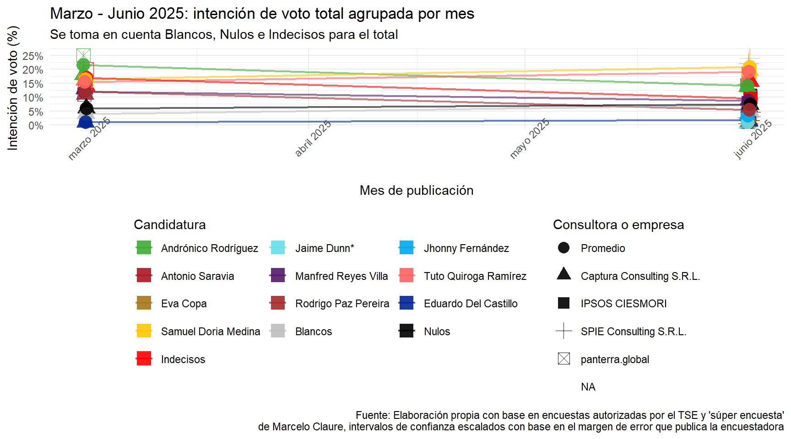
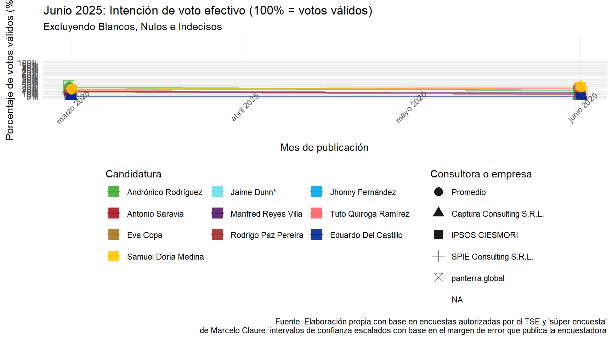

Encuesta de encuestas: Elecciones Generales Bolivia 2025
Última actualización: 30 de junio de 2025
Registro de cambios
30/06/2025: Se añade información de la segunda encuesta de Captura Consulting publicada por Red Uno y RTP publicada en esta fecha. También se agrega la primera encuesta de la misma consultora, que corresponde al periodo de fines de marzo. Se introducen algunas modificaciones menores al análisis e interpretación en función de la nueva información. Optimizaciones, cambios estéticos menores en gráficas y correción ortográfica y de estilo del texto.
27/06/2025: Primera publicación con las encuestas de junio (UNITEL y El Deber) y encuesta de Marcelo Claure de fines de marzo como punto de referencia.
Presentación
Este es un ejercicio de análisis electoral y visualización de datos inspirado en el trabajo de Político.mx, la idea es recopilar en una base de datos públicas las encuestas oficiales (y tal vez las no oficiales) para compararlas en el tiempo. La base de datos se encuentra en este archivo de sheets y el diccionario de datos en este otro
Si quieres saber quién soy yo, puedes consultar mi linkedIn aquí.
En esta primera versión he optado por cubrir la mayor cantidad de información disponible y medianamente comparable posible. En este sentido, se ha incluido una encuesta no “oficial”, en el sentido de que no se encuentra autorizada por el Tribunal Supremo Electoral y lo que esto conlleva (validación técnica, levantada en los tiempos establecidos, etc), me refiero a la “súper encuesta” de Marcelo Claure y la consultora “panterra.global”.
De cualquier manera, esta es la única fotografía previa (casi 3 meses atrás) que tiene información sobre los tres primeros lugares, por lo que parece al menos ser un buen punto de referencia para observar algunos cambios en las tendencias.
Gráficos de votos totales
La intención de voto total toma en cuenta a los votos blancos, nulos e indecisos, estos tres representan ahora mismo entre 17 y 28 puntos porcentuales. Para referencia, en la elección de 2020 los blancos y nulos alcanzaron apenas 5% de los votos emitidos, en el proceso electoral de 2019 su proporción fue similar, mientras que en las elecciones generales de 2014 estuvieron cerca del 5.8%.
Las mayores variaciones entre las encuestas se concentran precisamente en los votos blancos, nulos e indecisos, lo que refleja la volatilidad de este segmento. Para estimar el porcentaje de electores indecisos que emitirán un voto válido, podemos realizar el siguiente cálculo:
Promedio de indecisos en encuestas recientes:
\[ \text{Promedio}_{\text{indecisos}} = \frac{17\%\,(\text{SPIE}) + 27\%\,(\text{IPSOS}) + 28\%\,(\text{Captura})}{3} = 24\% \]Ajuste por votos nulos/blancos históricos:
Asumiendo que, en etapas finales, alrededor del 5% de los votos serán nulos o blancos (basado en tendencias históricas), el porcentaje estimado de electores indecisos con voto válido sería:
\[ \text{Indecisos}_{\text{válidos}} = \text{Promedio}_{\text{indecisos}} - 5\% = \mathbf{19\%} \]
Por lo tanto, aproximadamente 19% del electorado emitirá un voto válido pero aún no se ha definido por ninguna candidatura. En un contexto de crisis, es probable que esta decisión se retrase hasta el último momento, a menos que un evento catalizador permita a los votantes inclinarse por una opción o descartar alternativas.
Cabe destacar que los hallazgos de todas las encuestadoras muestran cierto grado de consistencia. Todas coinciden en las candidaturas que ocupan el primero, segundo y tercer lugar. Eso sí, las mayores diferencias estadísticamente significativas, es decir, tomando en cuenta los márgenes de error, se dan en la separación porcentual entre los candidatos, como se explica a continuación.
Llama la atención las estimaciones para la candidatura de UNIDAD (Samuel Doria Medina), a quien SPIE Consulting sitúa en el primer lugar con cerca del 25%, mientras que IPSOS CIESMORI también declara ganador a Samuel, pero lo hace con 5% menos, y con una diferencia casi nula con el segundo lugar, ocupado por Tuto Quiroga (LIBRE). Captura Consulting muestra las mismas tendencias, pero con márgenes todavía más modestos, Samuel sería el ganador con 19.6%, seguido por Tuto Quiroga con 16.6% puntos porcentuales menos; esta diferencia de Captura Consulting comparada con las otras encuestas se explica porque también recoge los niveles de indecisión más altos con 15.5%, al igual que nulos y blancos (12.4% si sumamos estos últimos).
Si hablamos de las diferencias entre los primeros y segundos lugares, estas no son estadísticamente significativas en ningún caso. El tercer lugar lo ocupa Andrónico Rodríguez (Alianza Popular). Según IPSOS CIESMORI, el presidente del senado se encuentra relativamente cerca de Tuto -alrededor de 4.2 puntos y a casi 5 puntos de Samuel, pero SPIE Consulting lo posiciona a más de 7 puntos del segundo lugar y casi 10 puntos del primero; Captura Consulting pone a Rodríguez a 3 puntos del segundo lugar y 5 puntos del primero. Este margen relativamente amplio y por encima de los errores estadísiticos proyectados puede ser síntoma de que alguna de las consultoras está errada en la distancia entre Rodríguez y el segundo y primer lugar, o de que hay diferencias cualitativas entre el electorado explicados por los cambios en la coyuntura correspondiente los periodos de levantamiento.
Sobre esto último, IPSOS-CIESMORI realizó su investigación de campo durante la última semana de mayo, SPIE Consulting la llevó a cabo la segunda semana de junio, y Captura Consulting también realizó sus entrevistas durante mediados de junio. Dado que los resultados de IPSOS y Captura muestran mayor consistencia -a pesar de tener 2 semanas entre un operativo estadístico y otro-, parece más probable que las diferencias entre los tres primeros lugares son más pequeñas de lo que a SPIE Consulting (y su medio de comunicación contratante, El Deber) le gustaría.
Teniendo en cuenta que las candidaturas con las campañas aparentemente más organizadas y con más recursos hasta el momento (Samuel y Tuto) son las que están liderando la intención de voto durante el mes de junio, parece ser que el electorado premia a quienes están haciendo su tarea como candidatos. Tal vez la excepción a la regla es Manfred Reyes Villa, quien a pesar de estar movilizando aparato, recursos y visitando medios de comunicación constantemente, parece no poder proyectarse a nivel nacional. Posteriormente (y en función de mi tiempo disponible) intentaré desagregar el análisis al menos a nivel regional, pues las encuestas observadas presentan errores de estimación muy altos a nivel subnacional, en especial en los departamentos menos poblados.

Sobra decir que la inestabilidad política, la improvisación de los partidos políticos, la judicialización de la elección y la endeble respuesta del Tribunal Supremo Electoral no han permitido que las campañas despeguen. Muchos de los partidos iniciaron oficialmente sus camapañas el fin de semana del 28 de junio. Según el calendario electoral, los partidos pueden presentar sustitutos hasta 45 días antes de la elección en caso de que los candidatos renuncien, esto es, hasta el viernes 4 de julio. En otras palabras, no será hasta esa fecha que se cierren las negociaciones políticas y podamos conocer a las candidaturas “firmes”. Después de ese día, las únicas sustituciones de candidaturas podrán ser por causa de inhabilitación, fallecimiento o incapacidad total.
Justamente entrando en la dinámica, es estrepitosa la caída de casi 10 puntos que sufre Andrónico entre fines de marzo y mediados de junio. Mucho ha sucedido en todo este tiempo, el conflicto entre los grupos evistas y el gobierno, su constante inacción ante los embates de sus adversarios (internos y externos) y la escisión definitiva del MAS en tres bloques (el MAS-IPSP como tal, el mismo Andrónico y el grupo evista) parecen haber cobrado una dolorosa factura. Sin embargo, considero también que resulta en el candidato más conciliador y con mayor potencial de crecimiento desde el movimiento popular. Eduardo del Castillo le está representando al MAS-IPSP el nivel de preferencia electoral más bajo en casi 25 años, no me animo a decir si el rechazo se debe a su persona como tal o más bien a que el electorado sigue viendo en él la sombra de Lucho Arce, quién se encuentra en mínimos históricos de aprobación. Y claro, es muy difícil que uno de los ministros más visibles del oficialismo logre desvincular su imagen de la del gobierno arcista a unos meses de las elecciones, por mucho que lo haya estado intentando.Junto el MAS-IPSP se ven 3 candidaturas más que estadísticamente hablando podrían tener votaciones prácticamente nulas, Eva Copa (MORENA), Antonio Saravia (Libertad y Progreso) y Jaime Dunn (Nueva Generación Patriótica).
Parece ser que aquellos ultra-libertarios que en sus sueños más guajiros pensaron que era posible un Milei boliviano van a amanecer mojados. Esto no quita que, sin importar el gobierno que venga, vendrá el ajuste económico y los correspondientes costos sociales para las clases más vulnerables, pero ese es tema de otro tipo de análisis.
Gráficos de votos válidos
Finalmente, se presenta el ejercicio con el voto efectivo, aunque este debe ser tomado con precaución, dado el altísimo porcentaje de indecisos, nulos y blancos, que pueden fluctuar mucho entre hoy y el día de la elección.
Las tendencias siguen el mismo camino de la votación total, el único objetivo de estas visualizaciones es observar si alguna candidatura se acerca al ansiado 50% + 1 voto que permite una victoria en primera vuelta. Pero ninguno alcanza siquiera el 30%

En la virtual situación de que la elección fuera este fin de semana y que los indecisos no tomen partido alguno, la segunda vuelta sería contendida por Samuel Doria Medina y Tuto Quiroga Ramírez.